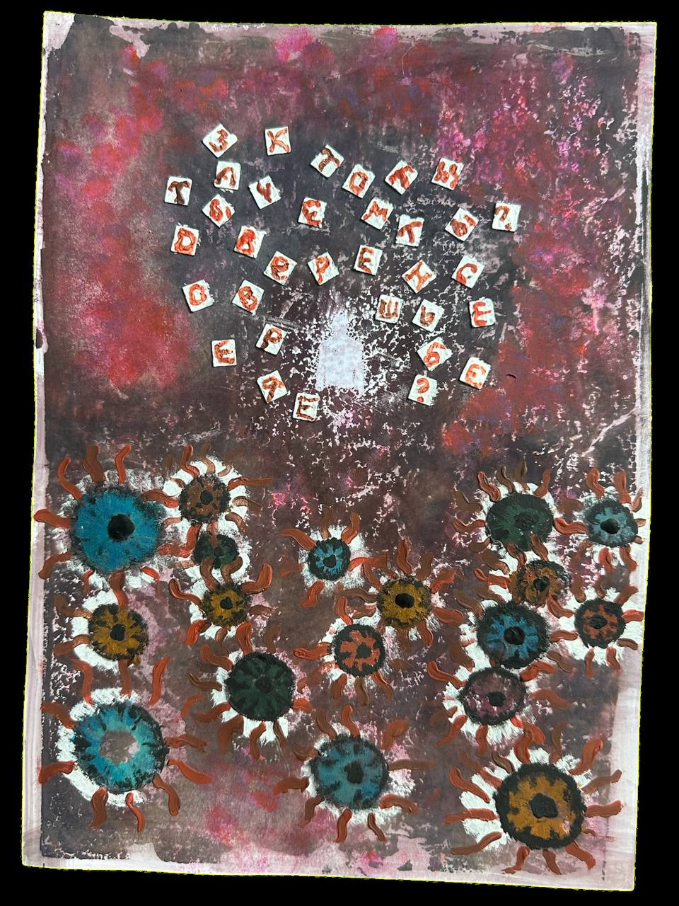

C:\> open project_notes.txt
they never lie
A field of eyes, standing in for the judging gazes that can throw a person off their own path. The work began as a conversation between two artists, each searching for her own way forward, and took its first shape as an acrylic painting by Alisa Feer (Uvaliss).
Sinaida translated that painting into an interactive field: a soul-shaped figure moving through poppies, meeting fifty questions along the way — all of them about the feeling of selfhood, none of them answerable by anyone but the person asking. The interface deliberately recalls old computers, a register chosen for the same reason the questions are: to slow a person down enough to actually look. The result is meant as an immersion into the subconscious — projecting one's own soul onto a lit figure standing in a field of eyes.
A nod to Scarface's little friend and the eyes he made you meet — repurposed here as a title, not a threat.
The work exists twice. As a web experience, it is finished and live — playable now, no installation required. As an immersive installation, it is a proposal: a person enters a room lit red, finds a laptop and a projector mirroring its screen, and walks the same field at the scale of the room. The installation has been tested at home in Prague, 2026 — not yet exhibited.

Screen capture of the web experience.
— a room that can be darkened, lit red
— one laptop, running the web experience
— one projector mirroring the laptop screen
— a camera for optional hand tracking (palm to steer, fist to dive, pinch to pick)
— red ambient lighting
Concept & painting: Alisa Feer (Uvaliss) · @uvaliss
Interactive design & code: Sinaida Krivchenko · @sin.ai.da